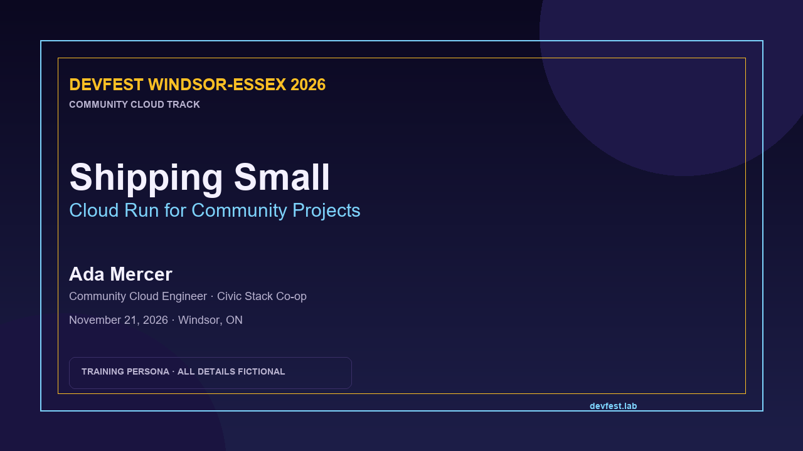

Grade 12 Activity: DevFest Community Portal
Before You Begin
- Launched the exercise and opened the lab browser
- You can reach
http://devfest.lab:8080 - You have not downloaded or opened any real personal files
- You know you can pause, ask for help, or stop at any time
This is a safe place to start
You do not need any prior cybersecurity experience. The portal is fictional, you cannot break it, and using the hints is expected. If you feel stuck, that means you are learning, not failing.
Scenario
DevFest Windsor-Essex is a community developer conference. The volunteer team built a small portal for the schedule, speakers, and shared slide exports.
One speaker exported a slide deck as a PNG. The slides look ordinary, but the file metadata still contains the speaker notes from the community track handoff.
Your job is to find the flag and explain why a public file can reveal more than its visible content.

Your Objectives
- Explore a conference portal using only a browser
- Open a speaker profile and download a shared file
- Read PNG text metadata in the browser
- Recover the flag and describe one way to prevent the leak
Background: Files Carry Two Stories
A file has a visible story and a hidden story.
- The visible story is what you see when the file opens: the slide title, the speaker name, the event date.
- The hidden story is the metadata: who created the file, what software exported it, and notes that were meant for the speaker.
Metadata is not automatically secret. When a file is published, its metadata is often published with it. Removing sensitive notes before sharing is part of preparing a file for the public.
Walkthrough
Step 1: Open the portal
Read the home page and open Speakers.
Step 2: Open Ada Mercer's profile
Choose Ada Mercer. The profile includes a short talk description and a Download slide deck (PNG) link.
Step 3: Open the metadata viewer
Open:
Choose the downloaded PNG. The viewer reads the file's text metadata in your browser. Look for a field called Description.
Step 4: Submit the flag
The Description contains the community track handoff token. Copy the
OCR{...} value into the exercise flag box.
What Just Happened?
The slide looked harmless, but the export kept the speaker's notes in the file metadata. A public file can carry:
- author and organization names
- software and export details
- comments and speaker notes
- location or device information
The fix is not "never share slides." The fix is to review and strip metadata before publishing a file.
Analysis Questions
- What is the difference between the visible slide and its metadata?
- Why is metadata easy to overlook when sharing a file?
- Which school projects might accidentally include personal metadata?
- How could the DevFest team check files before publishing them?
- What would you do if a public file contained a real person's information?
Defensive Takeaways
- Review a file's metadata before posting it publicly.
- Strip author, comments, and location fields when they are not needed.
- Use an export or "publish" workflow that removes hidden data.
- Treat "it is just a slide" as a review question, not an assumption.
- Report accidental personal data instead of sharing it further.
If You Feel Stuck
That is normal. Try one of these:
- Re-read the page title and the speaker's profile. What file are they sharing?
- Open the browser metadata viewer and look for the word Description.
- Ask a classmate or teacher to read the step aloud with you.
- Use a hint in the exercise panel. Hints do not reduce your value as a learner.
You can also try the activity without joining the competition. Joining only adds your display name to the event leaderboard; the exercise works either way.
Teacher Notes
- The portal and all personas are fictional.
- The browser metadata viewer keeps the activity accessible on Chromebooks and shared devices.
- If a student has a terminal, the same finding can be reproduced with
curlandgrepor a metadata tool, but that is an extension, not a requirement. - Ask students to describe the file's provenance before revealing the flag.
- Praise careful reading, help-seeking, and explanation over speed.
- Remind students that joining the competition is optional and that they can leave at any time.
- Some students may be anxious about "hacking" language. Frame the task as checking a public file before trusting it, not as breaking into a system.